完整休眠舱 · 像素贴图 v2
沿用已确认的 v4.1 造型与开盖。Pixel Canals 是主要视觉质量标杆：几何承担轮廓、遮挡；像素贴图承担结构边缘、材质区别、明暗与表面信息。七类表面全部覆盖，原网格与动作未改。色板、像素密度、材质与屏幕信息仍为审图候选。
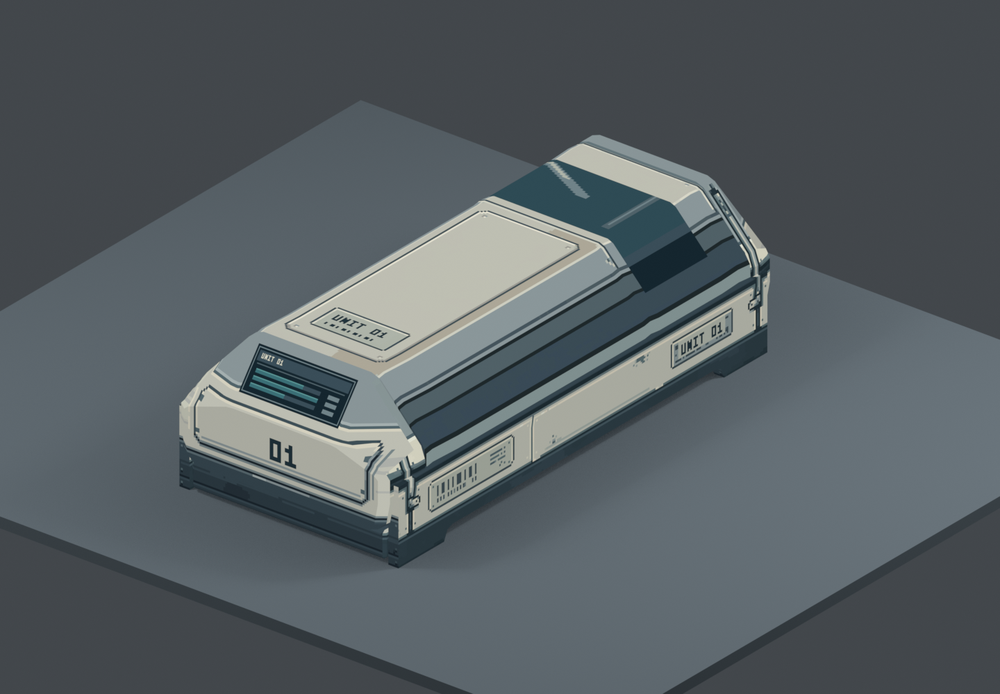
主候选 · 完整像素贴图 + 三档受控明暗，1440×1000原镜头。画面的结构与材质信息来自贴图；造型未改。
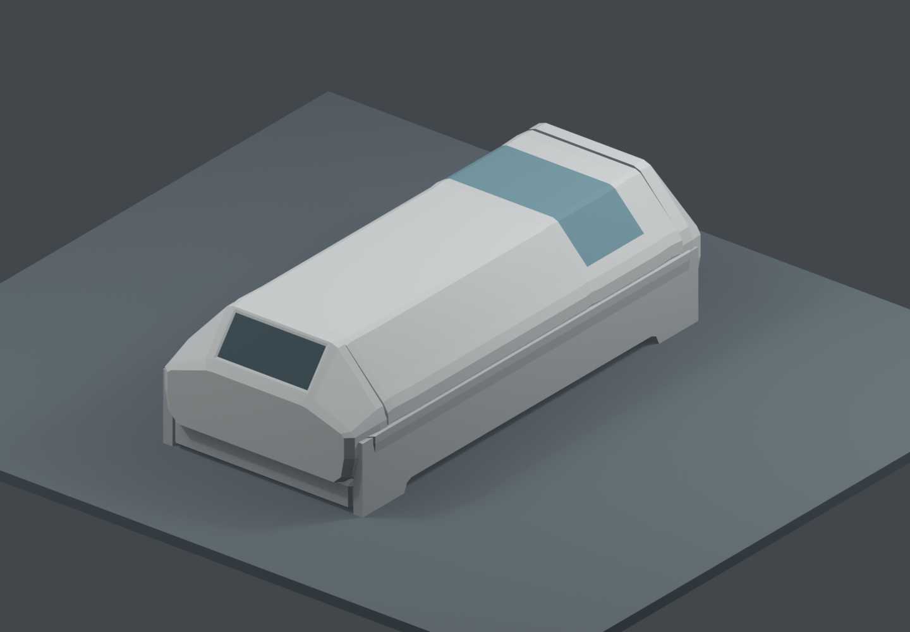
A · 原灰模，同镜头、灯光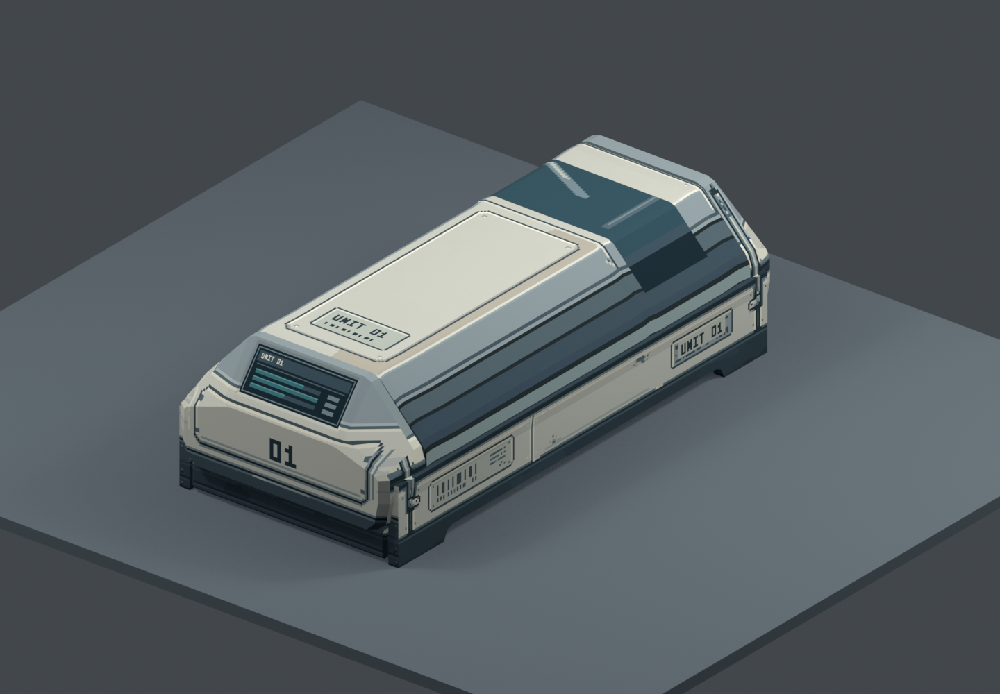
B · 七张完整贴图，沿用原连续 3D 照明C · 同贴图、同镜头，三档明暗材质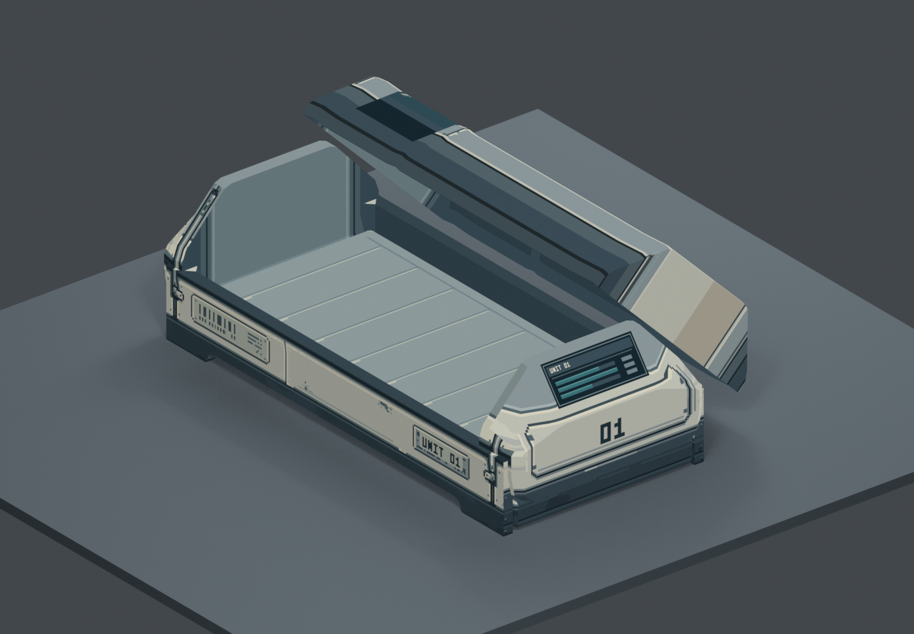
D · 原有 45° 开盖，内衬、床垫与盖内侧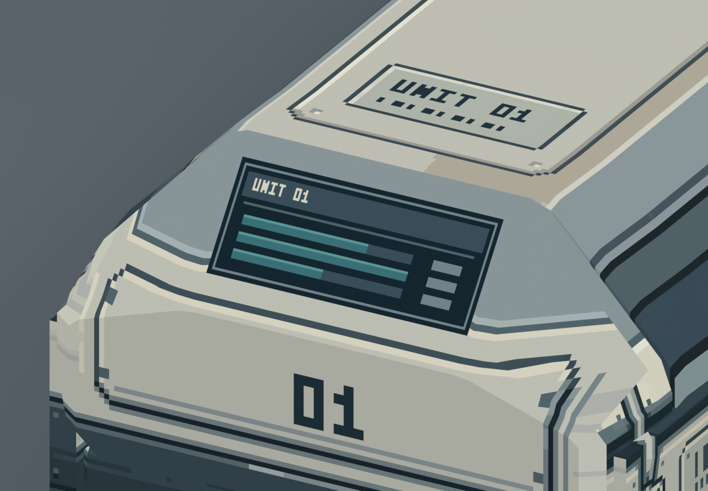
E · 信息屏与脚端近景，静态内容示意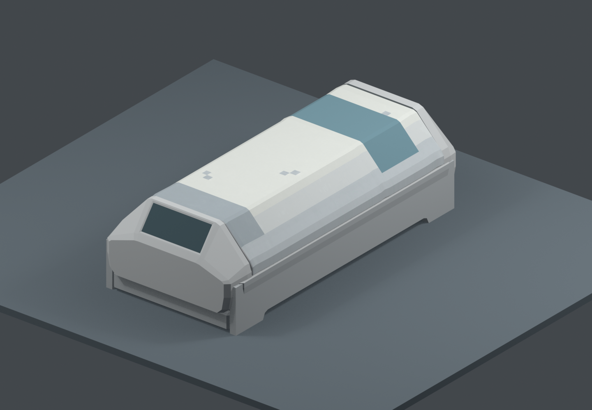
上一版 · 平色与斑点试贴，保留作对照显示采样候选
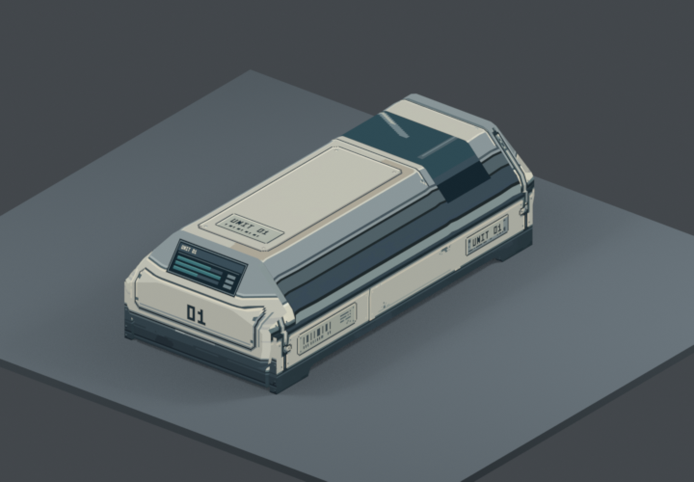
同材质与镜头，720×500原生渲染最近邻2×显示。此尺寸只用于比较采样观感，不是游戏画布定案。
完整表面图
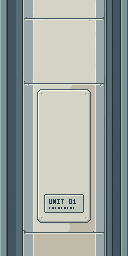
舱盖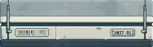
长侧壳 / 底座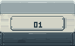
端部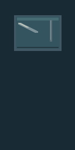
头窗反射色块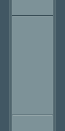
内衬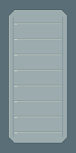
床垫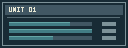
屏幕示意Blender 工程 · 说明与证据边界 · 七份 Aseprite 分层文件 · PixelLab 提示词与消耗